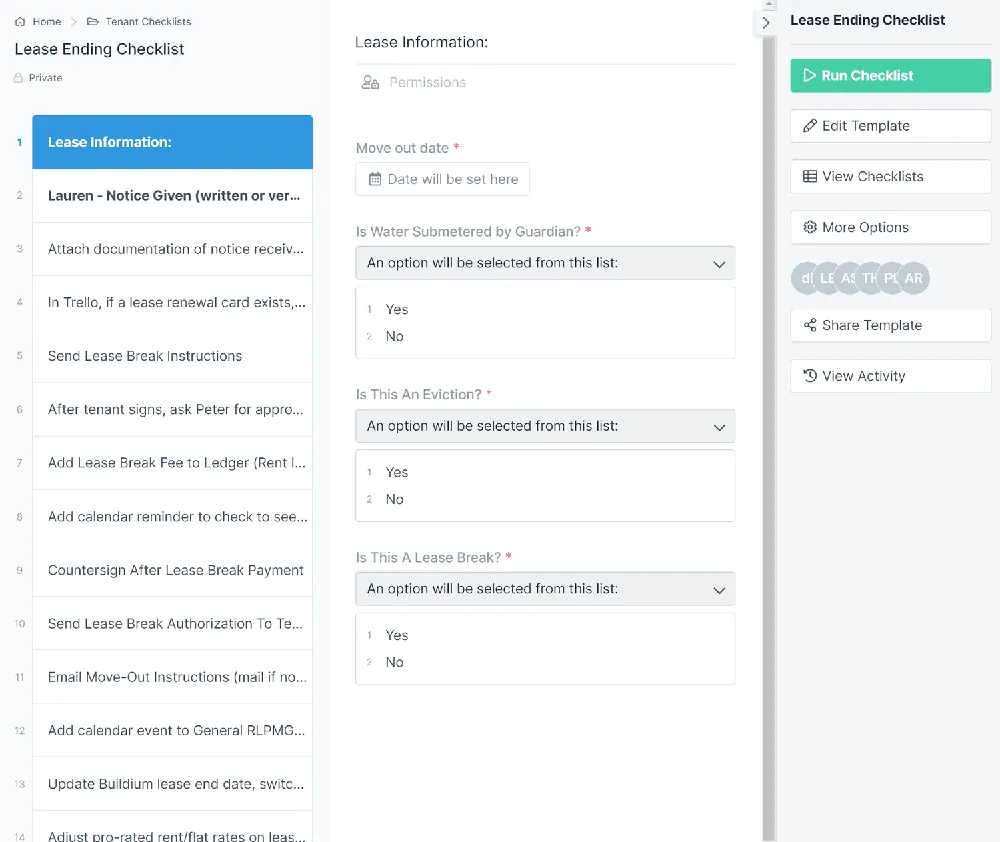
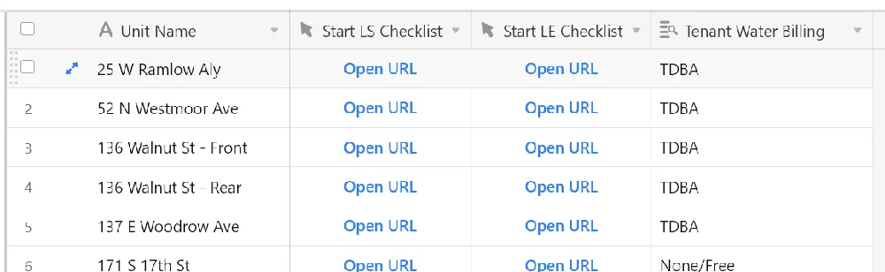
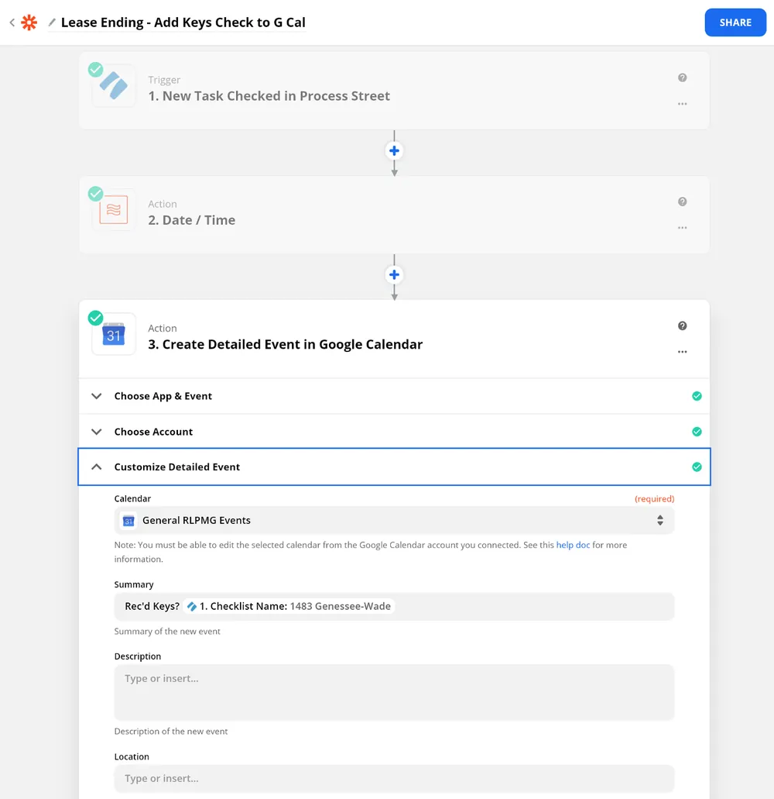
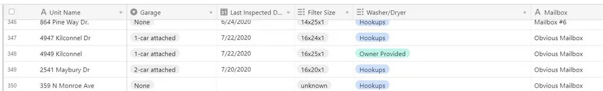

My original article about how we use process automation in our property management business got a lot of attention, so I promised a follow-up post with more details around the leasing cycle. Here I’ll use our Lease-Ending Checklist as an example.
We manage about 450 units, so assuming a 40% annual turnover ratio, we have a lease ending every other day, on average. Therefore it’s critical to have a consistent and efficient process for handling this task, so that nothing is missed. Here’s a screenshot of a portion of our checklist template in Process Street:

The checklist itself changes depending on the details of the move-out; in this example items 5–10 are automatically hidden (using conditional logic) if the selected answer to “Is This A Lease Break?” is “No”.
So each time we learn of an upcoming tenant move-out, a new instance of this checklist must be created, and then tasks can be checked off as they are completed. The first piece of automation is the creation of the checklist itself, which is done with the click of a button in Airtable:

All we need to do when we receive a move-out notice from a tenant is find the unit within Airtable and click the “Open URL” button under “Start LE (lease ending) Checklist”. That will pop open a new Lease Ending Checklist in Process Street, give it the correct name, and pre-populate a few useful data fields with information from Airtable. This feature within Process Street is called building a “Run Checklist Link” and is very powerful and customizable.
So, now we have the correct checklist created and can begin working it. More automation is possible within the checklist itself. For example, one of the items on the checklist is to create a calendar event to check if we’ve received keys on move-out day (this is what I call an exception-based task — we must take action if something does NOT happen). Since the move-out date is selected at the beginning of the Process Street checklist (see the first image above), we can pass that information to Zapier and have a google calendar event created automatically on our company’s shared calendar:

Email remains a very powerful automation tool. The beauty of email is that no special program or app is needed. It’s essentially a universal notification app. There are certain people within our company who need to take one-off actions when we receive a move-out notification, but it’s not worth the overhead of assigning them tasks within the Process Street checklist, having them log in to see them and check them off, etc. So we just email them the details automatically:

You can see here that Zapier has the ability to pull checklist data directly from Process Street and include in the email, which is very useful. In this example we’re using the Checklist Name (which includes the property address) and the Move-Out Date.
Much more is possible with move-in and move-out automation, but until we pull this core tenant and lease data out of our property management software (Buildum) and into Airtable, we are limited.
I hope this information is useful to someone!
I’m Peter Lohmann, CEO and founder of RL Property Management, a residential property management company located in Columbus Ohio. If you enjoyed this article, you can connect with me on Twitter, subscribe to my podcast Owner Occupied, or sign up for my mailing list.